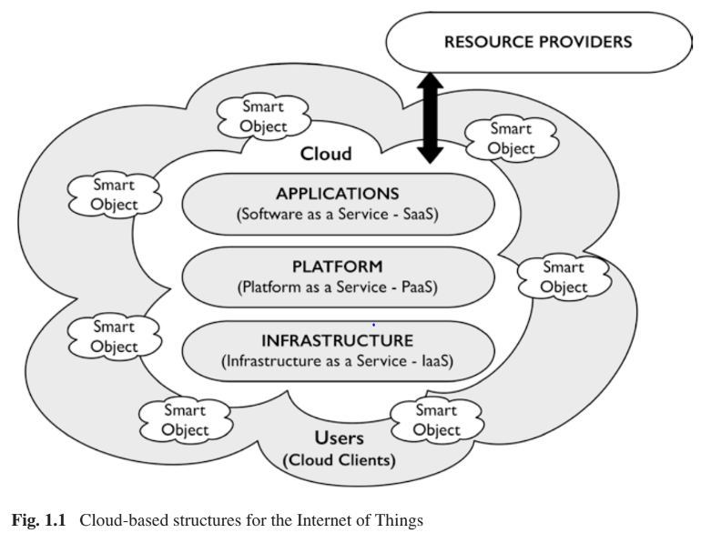

Assignments 3 <<
Previous MechaFutureAndChallenges
翻譯章節:MechaFutureAndChallenges
第1章機電期貨
1.1挑戰
自Tetsuro Mori提出機電一體化系統的概念以來，已有40多年的時間，以表述其日益增長的影響。電子元件本身就具有控制和操作的能力，機械系統是一個重要的時期，快速的技術變革。特別是，內部的重點已經轉移從硬件到固件和軟件的系統，導致引入圍繞智能設備的使用構建的各種消費品，他們中的許多人本質上仍然是機電一體化的，包括越來越複雜的電子產品和軟件。當與增強的本地和遠程通信結合使用時，導致基於智能對象能力的系統的發展相互通信，從而根據上下文。
反過來，這導致了諸如網絡物理等概念的發展 驅動交互的系統，物聯網和大數據通過智能對象和信息的組合。用戶通過智能對象訪問的結構利用各種通常不為人知或看不見的資源提供的資源。
表1.1所表示的準備金的增長也導致了增加複雜的用戶系統（例如智能手機）的可用性，並越來越多地融合了高質量的靜態和視頻成像功能。與傳統相機相比，它們現在負責的圖像更多。它還導致引入了一系列用於行為監控的用戶設備，智能手錶和平板電腦，它們都可以與其他通過互聯網媒介的智能設備。一起說明了此類設備的日常使用情況。對機電一體化的設計，開發和實施有影響系統，以及機電一體化本身的未來。

2014年，在瑞典的卡爾斯塔德，來自世界各地的許多從業者被問到一言以蔽之，提供他們對所面臨的最重大挑戰的看法由機電一體化在未來的幾年中。收到的響應如圖1.5所示。並將在本章以下各節中進行詳細討論。
1.2挑戰
通過以上回答，關鍵問題可以總結為：
- 設計
- 隱私和安全
- 複雜性與道德
- 人口老齡化
- 用戶
- 可持續發展
- 教育
以下各節將簡要討論其中的每一個。
1.2.1設計
工程設計的常規方法通常遵循以下路徑：
由圖1.6的簡化V模型定義的，並實現了集成，通過結構化的系統定義，然後進行系統開發過程並適當的測試制度支持的驗證，以支持驗證和驗證。各個模塊和子模塊，包括來自外部的模塊和子模塊，然後通過規範，測試，驗證和驗證以確保整體系統功能。
通過協同互動，這種方法已經發展了許多年，在設計理論和設計實踐之間。但是，在這種情況下，設計理論必然不可避免地落後於實踐，在這種實踐中，人們正在探索新技術所提供的可能性，也許沒有必要完全理解能力或含義。
在網絡物理系統和物聯網的情況下，系統是一個動態實體，智能對象根據上下文和需求進入或離開。在大多數情況下，基於雲端的組件在被採用之前對於用戶是未知的，並且同樣可能適用於任何功能性智能對象。這給設計師帶來了以下問題，確保系統不易被其包容，同時認識到系統根據需要進行自我配置的能力。
因此，從本質上講，用戶指定了系統功能和內容，之後系統自動配置從雲端中選擇具有信息的所需軟件和數據組件，然後成為其價值由用戶上下文確定的商品。涉及物理組件的地方，例如:在智能家居環境中，標識和選擇將由用戶指導。設計人員面臨的挑戰是提供工具，以使動態系統配置的影響能夠在設計過程的最早階段就被探索，並將這些結果集成到設備功能中， 適當程度。
1.2.2隱私和安全
許多與物聯網相關的設備都具有收集大量個人數據的能力，其中許多可能保存在用戶不知道的區域和方式中。然後，對這些數據進行分析的可能性以及相關的曲解的風險會影響隱私。但是，這必須是平衡潛在的提取有益知識的能力，尤其是在基於eIoT等基於IoT的應用程序的上下文中。在更廣泛的安全性範圍內，系統在個人和公司級別上保護自身免受入侵的能力越來越重要。表1.2根據信息系統審計與控制協會進行的調查顯示了感知到的威脅級別。
因此很明顯，系統設計人員的負擔越來越重。將隱私放在其設計過程的核心內物聯網，網絡物理系統和大數據，並且必須反映在設計過程本身以及支持該過程的方法和工具中。
1.2.3複雜性與道德
隨著系統變得越來越複雜並開始以更大的自主性運行，所有利益相關者理解其能力的能力引發了問題。從醫療保健到自動駕駛汽車的各種應用和環境的特性和功能。在將一個人或多個人的福祉或生命責任委託給系統的情況下尤其如此。其他問題包括：
- 技術的雙重用途-無人機等技術可以有益的應用，例如在作物管理中，也用於軍事和其他目的。
- 技術對環境的影響，技術的引入，進入環境可能會以多種方式破壞和改變該環境，即使潛在意圖是良性的。
- 技術對全球財富分配的影響-技術的使用gies可以增加不同社會群體之間的距離，即使在同一國家也是如此。
- 數字鴻溝和相關的社會技術鴻溝-訪問和使用服務程序的能力之間的差距越來越大，通過雲端計算。
- 確保公平獲取技術-控制對技術的訪問可能會限制開發。
- 技術成癮，個人沉迷於技術他們使用的。
- 技術鎖定，個人可以被鎖定到特定的技術中，gies，一個簡單的例子就是在Apple和Android之間進行選擇。
- 人類的非人性化和擬人化通過消除責任感他們的活動和福祉的能力。
1.2.4人口老齡化
面對人口老齡化，圖1.7顯示了過去和預期的變化。歐洲各年齡段的分佈情況，人們提出了一些問題，即如何最好地利用技術來支持老年人，並設法為他們提供更多老年人的獨立程度。特別是，有必要確保物理和信息領域內的流動性達到適當水平，以防止個人保持獨立性並與社會互動。
1.2.5用戶
可以看出，具有互聯網功能的設備的可用性通過使用社交媒體對社交行為產生了重大影響，但也允許比以往任何時候都更容易獲得信息。這樣的設備還支持與環境的交互級別提高，例如在智能家居中。此外，可穿戴設備的推出為eHealth和mHealth支持個人福祉，進而引發隱私和個人數據的控制。
但是，還需要開發新形式的用戶界面來支持，與此類系統進行交互的能力的用戶範圍更加廣泛。特別是，越來越需要能夠捕獲用戶意圖和上下文的信息。一種不需要復雜形式的交流或知識的方式的基礎技術。
1.2.6可持續發展
人們認識到有必要朝著以個人和他們的需求為中心，以有效的人為中心的更可持續的社會形式發展，老化和所有可用資源的使用，如圖1.8所示。在上下文中作為機電一體化的一部分，它集成到諸如智能家居和智能城市等概念中，這些信息用於管理日常活動。
例如，估計平均而言，在德國城市需要大約4.5公里的行駛時間，對於每輛汽車排放約140克的二氧化碳/公里，這將產生至少630克的不必要的二氧化碳，並且在停走交通中也要多得多。通過鏈接可用停車知識，通過適當的通信與車輛目的地之間的空間，可以消除大部分這種多餘的影響。表1.3中提出了影響城市的其他可持續性問題。
因此，總的來說，正在朝著建立可持續社會的方向邁進。與個人的聯繫以及解決人口老齡化等問題的核心，資源可用性和管理，氣候變化與彈性。關於機電一體化和物聯網，實現可持續性的基本要求是有效管理和使用所有資源。通過綜合使用服務信息來實現技術，物理和人通過一系列智能對象。
反過來，這意味著有效和適當地使用信息，以通過採用來支持個人參與其生活方式的各個方面新穎，創新的方法來理解，構建和管理物理和信息環境以及它們之間的關係圍繞物聯網配置的知識經濟的一部分。
兩種不同的城市場景如下：
方案1：新建，目的是實現物理和物理的集成信息環境從一開始就受到諸如以下設施的支持作為高速寬帶網絡，並具有部署各種智能設備的能力這些環境中的技術。
方案2：已建立的社區-這些社區代表了大多數人口，這意味著在引入基礎結構方面的變化將需要考慮對現有環境的影響以及該環境對技術需求的適應性。
1.2.7教育
機電一體化教育一直面臨著適當平衡的挑戰，了解集成要求的技術水平機械工程，電子學和信息技術的核心學科。鑑於圖1.9所示的過去40多年中技術基礎的長，機電一體化課程設計者在實現這種平衡方面面臨的挑戰已變得十分明顯更複雜。
除了與課程開發相關的課程設計挑戰之外，技術還需要考慮許多其他因素。這些包括：
- 交貨變更
- 大規模在線公開課程。
- 基於教程和研討會的學習支持。
- 混合式學習。
- 社交媒體對學習的影響。
- 結構性問題
- 分佈式學習資源。
- 內容的時間值。
- 協同工作。
因此，未來的關鍵因素是鼓勵創新，通過教育實現機電一體化的方法(圖1.10）。
1.3章節結構
本書由邀請作者組成的一系列章節組成，每個章節都是機電一體化領域的專家，在每種情況下，作者都面臨著挑戰，需要通過自己的研究或研究來確定當前的技術水平，以專業知識為出發點，然後試圖隔離並確定那些需要或可能在未來幾年中進行重大發展的關鍵領域。各章本身的組織如表1.4所示。
1.4摘要
儘管核心技術和概念基本上保持不變，自從概念以來，機電一體化的性質已經發生了重大變化是最初提出的，而且這種變化可能會繼續加速。在前面的章節中已經確定了要解決的一些問題和挑戰，並將在隨後的章節中進行開發和擴展。
第2章 機電一體化中斷
2.1它是如何開始的
機電一體化領域始於1970年代，當時需要機械系統更精確的受控運動。這迫使工業界和學術界探索傳感器和電子輔助反饋，同時在生產設施中主要使用電動驅動器而不是例如機械凸輪軸。這種引入反饋控制的運動構成了需要使機械工程師和電子工程師可以更好地合作，並彼此理解語言。請注意，當時的控制工程部門大部分是工業和學術界的電氣開發或研究部門的一部分。還採取了各種舉措，以開發通用的語言或方法。一些機構將機電一體化作為一門新興學科向前推進。
在行業中，設計團隊通常被迫在規範級別上從他們特定的學科知識中真正地討論更深刻的見解。計算機輔助的設計和仿真工具在1980年代末期和1990年代確實推動了這一領域的發展。面向項目的機電一體化工作方式的一個例子是光存儲設備的開發，如圖2.1所示。機械設計人員的團隊使用他們的有限元程序，以及電子和控制專家以及他們的特定仿真工具，共同開發了機制，並對可製造性，成本和動力學提出了非常嚴格的規範。
在1980年代同一時期，在許多行業和學術界，機械工程師開始越來越多地解決動力學和控制問題，而控制組也開始出現在機械工程系中，所有這些都標誌著人們已經擺脫了圖2.2的單一學科方法。

2.2計算機控制設備
個人計算機的飛速發展，使人們能夠更好地使用仿真和設計工具，從而在早期階段改善了總體設計過程和設計思想交流的質量。但是，同樣重要的是，基於PC的數字化計算機控制機電系統的測試和實現。這需要解決計算機科學工程的作用以及表示需要包括軟件規範，但仍然相當有限程度。這也導致越來越多的系統工程領域進入行業，成為在更複雜的產品和高科技系統上進行工作的一種方式。但是，請考慮“通用”語言，或者至少要理解每種語言。更好的是，顯然在硬件和軟件領域之間的瑣碎事情要少得多，而不是硬件領域本身。
從研究的角度來看，問題始於離散的時間級別，即如何使用計算機來實現控制功能，以前盡可能通過模擬實現來進行維護。但是，很快將更高級別的監督控制模式引入了機電一體化領域，這迫使人們進行研究以使其轉向更多領域。離散事件系統面臨的更困難的問題是，面對機械系統中的連續時間動態。這導致了系統和控制學科內混合系統的研究領域。這部分構成了硬件（舊的機電一體化）和軟件（計算機科學）領域之間的自然接口。
2.3應用
機電一體化思想帶來的性能提升是深遠的並得到廣泛認可。機電一體化的應用可以在許多產品和生產環境中找到。儘管在早期，控制電動機是一個經常看到的應用，但機電一體化的思想也是用於液壓系統的設計，壓電驅動執行器，建模和控制生產設備，科學設備，光機電一體化，汽車機電一體化等。
監督過去幾年提交的機電一體化論文的流入情況，有關醫療設備，高精度系統，無人機（UAV），汽車和機器人技術的更多應用論文已提交。關於建模語言和工具的科學成就的論文有所減少，這可能意味著合適的工具現在更加普遍。機電一體化教育方面的論文似乎也是如此。這是1990年代後期的熱門話題，在那裡找到了很好的例子，包括為學生做的實驗工作。
關於所謂的機電一體化設計方法的討論文件也不再那麼多了，因為到目前為止，很明顯，其中的一部分的機電一體化在實踐中所做的創新與幫助識別溝通的方式，最好通過使用共享模型或量化模擬。機電期刊提交中涉及的科學方法主要出現在系統和控制領域，在該領域中，機電應用通常被用作驗證或僅作為示例。
使用優化算法，不僅可以找到最佳控制律，而且越來越多地用於組件設計，直到系統拓撲優化為止一個新的設計工具。機電一體化項目和社區的核心仍然是機械工程，電氣工程以及系統和控制領域。與計算機科學和物理之間的相互關係仍然相當有限，但這將轉移到未來幾年。
2.4多物理場
高端機電一體化系統（例如用於光學光刻或電子掃描探針的圖2.3中的晶圓掃描器）以及在空間應用和科學儀器中的誤差預算越來越接近於平坦分佈在各種來源上。
例如，對於現代晶圓掃描儀，熱和冷卻流體引起的振動，現在與致動器激發的機械模態振動一樣重要。這與極端條件和要求有關；以超過10 g的加速度移動80 kg的質量，並達到以下精度納米，具有mKelvin溫度變化。這意味著“正常”機電一體化及其運動控制系統現在開始具有動態的具有熱和流體控制動力學的作用。整體表現評估和設計改進現在不僅涵蓋機械和電氣/電子和軟件學科，還涉及物理問題，例如基於熱和流體偏微分方程的建模。那會是什麼當我們包括附加製造的可能性時，對機電一體化設計思維有何影響？如果可以使用3D工業金屬或陶瓷打印機自由調整我們的機構形狀，那麼如何獲得整體最佳設計？
如果我們能夠通過適當的系統工程和更多學科來處理這種複雜性，那麼現在只能將性能折衷提升到一個新的水平。
在圖2.4中，以性能與資源的關係形式描述了這種趨勢。情節，資源可以是金錢，人員，開發時間，計算機能力，能源等。性能通常是準確性，吞吐量和魯棒性可靠性。曲線表明，達到更高的性能確實會花費越來越多的資源，直到不可行為止。在圖中，還繪製了示例。第一，一個簡單的變速箱齒輪系統，性能低下（就精度而言），並且需要有限的資源。圖中第二個示例是現代晶圓掃描儀是極端性能和巨大需求的典範資源。
曲線表明，為了進一步促進創新，我們需要包含兩種方法。首先，針對所有相關學科，因此包括實例物理，我們將能夠提高性能。二，介紹在系統工程方法中，我們可以更好地處理複雜性，因此在資源軸上就不多了。
2.5機器人
與上述高端系統幾乎相反，機器人技術領域也影響機電一體化領域。在這裡，不是需要多物理學科，而是計算機科學領域來應對非結構化和不斷變化的環境。在機器人技術方面，發展方向是視覺，地圖繪製和本地化，因此不僅要了解環境（“世界建模”），還要了解人工智能（AI）領域，這已經是數十年的承諾，但可以發展在未來幾年迅速發展。由於即將推出的自動駕駛汽車，這兩個領域目前都處於加速階段。在動力總成（即電驅動和變速箱）領域以及計算機科學的應用領域，汽車行業的破壞力是巨大的，例如現代汽車中的傳感器，包括在乘用車和商用車中實現的自動功能的快速發展。事實上，這一切都與機電一體化，人工智能，控制有關！
機器人技術領域，包括自動駕駛汽車，可以看作是獨立於機電一體化的研究領域，但例如速度要求，工業機器人的數量或外科機器人（例如圖2.5的Preceyes機器人）的精度要求有必要包括以下內容：
機器人的動態行為。從剛體建模到柔性系統的轉變，直接使其成為機電一體化的核心。系統工程思想和系統拓撲優化也是如此，在車輛的混合動力系統中也是如此。機電一體化的終結和機器人技術的啟動？
2.6網絡物理系統，智能產業和物聯網
從分散的機電一體化系統到聯網的系統的轉變被稱為網絡物理系統領域，指的是控制論領域。研究的問題是如何在數據包（信息）丟失期間或之後保證穩定性和性能，以及如何處理可變延遲。該領域距離機電一體化的硬件還很遠，但是發展如此之快，我們應該問一個問題，充分利用網絡控制系統的潛力，例如在遠程狀態監視和服務領域。在接下來的十年中，物聯網（IoT）的爆炸式增長進一步要求找到該問題的答案。
機電一體化將在IoT的未來發展中成為一種應用。工業4.0或智能工業的關注點是關於聯網的現代工業自動化。
- 如果共享物流知識，如果一個工作站的性能達到是否優化了作為總物流或運營的一部分，如果生產設備中的服務和維修功能強大，因為工作站靈活並且可以適應？
- 這對工業機器人和智能機電一體化生產設備意味著什麼？
- 這將如何影響我們的機電設備的設計要求以及產品？
物聯網不僅會改變現代化的工廠。據估計，到2020年，將有500億台設備連接到互聯網。這意味著它將進入我們的家庭，家用設備以及汽車。當可穿戴電子設備被進一步推動時，我們被傳感器所包圍，我們只需要朝致動一步就可以閉合迴路，從而再次進入機電一體化領域！
2.7走向系統集成
監督這些發展，我們可能會質疑機電一體化實際上是或將會是。機電一體化是否受到干擾？它已經蒸發到系統工程中了嗎，它是否是支持學科的一部分，它是否已經擴大成為網絡物理學的骨幹？此外，如果生物系統也要實現技術設備（人類互聯網），那麼機電一體化學科的作用是什麼？我們應該如何在機電一體化思維方面對人們進行教育？在圖2.6中，使用系統工程的作用來實現學科和技術貢獻的必要整合。
在本書中，許多提到的發展將得到解決。我們不會對機電一體化的未來及其教育有確切的答案，但是我們也知道，由於我們無法預測未來，因此它應該是強大且適應性強的！我們肯定知道技術發展的步伐正在加快，因此，我們也應該如此！

第3章機電一體化的未來挑戰
3.1引言
在航空航天工業中，掌握機電一體化系統的設計是一項主要要求。確實，程序成本的很大一部分花在了這些系統的設計上，這也代表了產品性能的很大一部分。在本章中，將揭露工業界在未來幾年中在機電一體化領域將面臨的一些主要挑戰。這些挑戰涉及機電系統的設計，驗證確認及其操作。
3.2設計架構和規模調整中的挑戰
3.2.1使用模型確定體系結構的大小
嵌入式技術系統的物理架構，例如電子飛行控制系統的機械執行器，圖3.1a或電力電子供應網絡的模塊（圖3.2b）是來自不同的技術。Van der Auweraer等人的工作。 Hehenberger等人強調指出，這種多域系統的設計需要不同的建模層，如圖3.2所示：
- 機電一體化層必須考慮組件之間的功能耦合和物理耦合。通常使用0D / 1D模型（也稱為集總參數模型）完成此級別的建模，該模型由代數方程，常微分方程（ODE）或微分代數方程（DAE）表示。
- 基於幾何表示，在上一層中需要一個特定的域層來描述性能極限和參數。特定域現象通常通過偏微分方程（PDE）表示。可以實現此級別的建模以簡化使用分析模型的幾何圖形，或者對於復雜的2D和3D幾何圖形，通過使用數值逼近（例如有限元方法）進行實例（FEM）。
從系統集成商的角度出發，功率元件的設計應允許通過多種相互作用的技術來優化組件的尺寸和規格。此系統級設計與組件設計不同，需要在機電一體化層中表示關鍵組件的關鍵信息。 具有專用模型的特定領域層。
被Budinger等人稱為“估計模型”。他們使 設計師可以輕鬆考慮多個設計約束。這些模型直接和明確地將一些主要特徵（例如組件的整體尺寸）與尺寸調整和優化所需的次要特徵聯繫起來。這些估計模型所需的能力如下：
- 提出易於處理和在不同計算工具中實施的表格。
- 使自己易於進行分析操作。
- 可以在與最初使用它們的區域稍有不同的區域中重複使用。
為了滿足這些約束，通常使用簡化的分析模型。其中，縮放定律已被證明可以有效地表示各種變化範圍內的物理現象。但是，這些模型僅在某些條件下有效，其中可以提到幾何形狀和材料相似性以及行駛物理現象的唯一性。
對於系統設計人員而言，模型應盡可能具有預測性。詳細的有限元模型可以準確地預測物理現象，在這種情況下仍然很耗時。儘管最近有工作重點，在模型降階方面，有限元模型的計算成本在初步設計階段仍然過高。因此，為此目的使用元建模技術很有趣。機電設計的挑戰是從集成者的角度開發專門用於選擇系統組件的元建模技術。 Budinger等人的論文。提出了一種基於比例定律的元建模方法，該方法可從局部數值模擬中提取估計模型的簡單全局表達式（FEM）。
3.2.2機電一體化設計學科系統篇
如圖3.1所示，系統的設計受到以下主要方面的驅動，以滿足各種要求：機身與驅動負載之間的集成（質量，幾何包絡），對環境的抵抗力（熱和振動），瞬時功率和節能，動態性能，使用壽命，可靠性，對故障的耐受性或耐受性。表3.1總結了這些不同的設計觀點以及基於模型的設計可能的關聯建模級別。
在優化此類系統時，這些多種設計觀點產生了真正的挑戰。要在同一循環中考慮這些標準，多學科設計優化（MDO）的工具可能會有用。 MDO是工程領域，它使用統計和優化方法來解決設計問題，並結合了以2D / 3D FEM分析，0D / 1D模擬和代數計算為代表的所有相關學科。每個特定的計算都被視為一個黑盒，可以直接調用它，並通過實驗設計（DoE）進行分析。所有計算都可以鏈接在一起，並用於設計探索，靈敏度，優化和魯棒性分析iSight，Optimus和ModelCenter就是此類框架的示例。
優化任務需要較少的模型計算時間。替代模型或元模型（另一模型的簡化或近似描述模型）可以用於將特定域層模型（FEM）表示為機電一體化層。機電一體化層通常在時域中處理動態系統，並使用瞬態時間模擬，但是在設計優化期間，依靠評估負載曲線的主要諧波來近似時域行為的方法可能很有吸引力。
這些優化和統計支持工具允許以自由選擇的順序鏈接設計過程的步驟。但是，它們在選擇如何構造計算中的連接或將哪些參數作為設計參數，約束或目標考慮在內時沒有提供幫助。
基於知識的工程（KBE）是一門結合了基於知識的方法和計算機輔助設計的學科，對設計支持也很有用。 KBE軟件包專用於集中特定產品設計的所有知識和專長。在這些環境中使用的科學概念和方法如下：
- 知識庫和計算機輔助設計：使用非定向的代數方程式（聲明性方法）來充分利用組件的知識。可以輕鬆地組裝這些組件以描述不同的體系結構。
- 約束網絡、圖論和優化：以聲明形式最初定義的方程組的方向是為了獲得可用於優化算法的計算過程。
可以通過符號計算，間隔計算或人工智能來支持對等式的適應或分析。這些KBE工具可以是：
- 鏈接到Genus Designer中的CAD軟件，該軟件可以捕獲配置規則並為Solidworks執行過程自動化。
- 專門針對Enventive中的特定領域進行平面機構的概念設計（優化，公差，靈敏度分析）；
- 在多個領域開發，例如FST研究所的軟件
（TUHH University），在相同的基礎上，支持初步
飛機的舉昇機構，液壓網絡和EMA設計；
- 常規語言，例如:TKSolver、Ascend、Cades、Design 43或PaceLab套件，通常是聲明性語言，可以啟用一組根據設計目標，代數方程可與不同的輸入配合使用。
這些工具可以為設計人員提供有趣且重要的幫助，尤其是當系統使用多種技術變得複雜時。工具和專用的元建模技術，它們可能代表了未來機電一體化系統的設計。
3.2.3綜合最佳架構的能力
在設計機電系統時，可以考慮採用多種解決方案體系結構級別。選擇最合適的體系結構的任務是當前主要通過手動定義，評估和比較設想的體系結構來完成的複雜任務。在體系結構級別使用設計綜合和優化技術可以使設計人員設想更廣泛的解決方案，其中包括潛在的創新解決方案，並進行比較正式（使用定義明確的指標）對它們進行選擇，以選擇最合適的指標。
工程設計綜合是基於對人工製品的目的，其預期特性和設計知識的了解而導致的工程人工製品（2D / 3D形狀，體系結構等）合成的一組技術。（明確表示形式或從以前的設計中提取）。
優化技術會迭代地修改一些初始解決方案（通常是隨機生成的）以優化測試解決方案的特性，但是他們很少考慮設計知識來生成可行的解決方案。
耦合設計綜合和優化可以生成可行的解決方案，並找到性能最佳的解決方案。由於探索的設計空間可能更大並且該過程不受認知偏見（例如信念）的影響，因此它通常比手動過程更有效。但是，這需要具有評估所有生成的解決方案以及所有定義的選擇標準（優化目標/約束）的能力。此類技術的使用示例是機器人手臂，真空吸塵器或飛機駕駛艙的設計。
3.2.4機電一體化的安全性和可用性研究系統篇
可靠性，可用性，可維護性和安全性（RAMS）標准通常是在設計過程中進行的研究的一部分。必須針對每個考慮的替代方案進行大量此類研究，以便就這些標準（可靠性，可用性，可維護性等）量化不同體系結構的性能。
目前，這些研究是由構建機電系統RAMS模型並對其進行分析以得出結論的專家進行的。RAMS模型通常是使用專用形式主義（例如Petri網路，貝葉斯網絡，可靠性框圖或更高級的語言，例如Altarica和Figaro）構建的。
為了加快研究速度，將RAMS研究與（描述性或行為的）體系結構模型聯繫起來將是一個優勢。實際上，RAMS研究期間可以重用設計模型中嵌入的許多信息。
第一種方法考慮使用RAMS數據（故障模式，可靠性比率等）豐富設計模型，以便能夠自動生成RAMS楷模。例如:SysML模型（具有特定的配置文件）可用於自動計算系統級故障率。
另一種方法考慮將設計模型鏈接到RAMS模型，以確保RAMS模型的一致性。在MODRIO項目的框架中，開發了一個原型，以從Modelica模型和Figaro知識庫自動生成Figaro模型。使用Modelica特定的構造從知識基礎和其他必要信息中聲明與Figaro塊的對應關係。
3.2.5產品的功能虛擬表示
機電一體化系統的設計和集成是多學科的設計過程，需要多個領域進行協作和交換信息。在當今的大型公司和擴展型企業中，集中這些信息流對於提高設計階段的效率至關重要。
改善團隊之間溝通的一種方法是共享集成了所有觀點的產品的通用虛擬表示。這種表示方式使不同的團隊可以查看其他團隊的約束，並始終可以訪問最新版本的設計。此外，它還可以考慮模擬過程中來自其他域的影響。
綜合的觀點也將為決策提供更堅實的基礎，因為它可以讓您了解所有相關學科的所有限制和目標。
這種表示形式的主要技術推動因素是在使用不同工具和數據格式的不同團隊之間交換工程數據，以及集成來自不同學科的模型的能力。
3.3驗證和驗證中的挑戰
3.3.1虛擬驗證系統的能力
機電一體化系統的驗證對工業界（尤其是在航空航天業中）是一項非常昂貴的任務。確實，這既需要係統可用，又需要開發和製造測試平台，而這些測試平台通常無法在程序之間重複使用。降低測試成本的一種方法是虛擬測試。該實踐旨在開發虛擬手段（系統模型和系統仿真環境）來測試系統並驗證其是否符合要求。例如，實際機翼上的測試可以用有限元模型代替。
虛擬測試的主要好處是成本，因為虛擬測試台的成本通常比實際測試台低得多，並且通常可以從一個程序中重複使用到另一個。實際上，每個程序的許多系統都是相似的其模型通常可以在有限的範圍內適應新設計一個。
不太明顯的好處是虛擬測試台可以刺激在離系統的實際刺激更近的條件下使用系統將在其生命週期中遇到。例如，在機翼彎曲測試中，載荷為
可以在實際測試台上本地應用，而可以在虛擬測試台上統一應用它們，從而以更準確的方式表示實際負載。一些方面（例如熱效應）也可以在系統模型中更輕鬆地考慮，但是如果需要進行真正的測試，則它們需要非常昂貴的測試手段。
要啟用虛擬測試，必須很好地管理驗證過程的多個方面。首先，當然要驗證模型及其仿真環境必須進行。這可以通過將結果與測試台數據或飛行測試數據進行比較來完成。在這方面，模型校準和不確定性需要管理技術。
3.3.2正式向模型供應商發出模型請求
模型越來越多地用於在系統上執行驗證和確認（V＆V）活動。這些模型通常由系統的供應商（內部或外部客戶）設計。但是，在功能，有效性範圍，精度等方面能夠陳述模型期望的內容仍然是一個挑戰。實際上，請求者對總體仿真環境（即其他交互模型，仿真輸入等）有一種看法，而這種看法很少以正式的方式與模型開發者進行交流。在將預期模型實際提供給模型請求者之前，這通常會導致多次迭代。
最近，模型身份證被提出作為模型要求的標準描述。 MIC允許描述模型的某些所需特性，以指導模型的開發。首先，必須定義模型的接口，以描述模型的端口和交換的變量。第二，模型信息的四個部分必須填寫如下：
對象-型號名稱，粒度級別，參考文檔
對像上下文用法-時間計算，工具
方法-模型尺寸，方法，線性
模型質量-準確性，驗證，確認
這種標準化模型規範的另一潛在用途是對現有模型的重用。實際上，通過對模型的特徵進行形式化，可以在模型數據庫中進行後搜索，並可以在不同的上下文中重用模型。
3.3.3交換和無縫集成模型的能力工業夥伴之間
關於構建用於驗證機電系統的多系統仿真平台的目標，主要要素是交換和集成模塊的能力。當前，模型集成商傾向於迫使其供應商使用一種工具並遵循特定的建模程序（例如AP2633）。在這方面，模型供應商希望使用自己的工具對系統進行建模。因此，能夠交換和集成來自不同工具的模型將是巨大的進步。
通過提供與工具無關的動態模型交換和協同仿真工具標準，功能模型接口（FMI）計劃朝著這個方向發展。它允許生成“中性格式”模型（以C代碼和xml1文件的形式），這些模型可以無縫集成到兼容版本中平台。目前，大約有70種工具支持該標準。
使用這些標準模型交換錶格可以提供靈活性，因為可以使用許多不同的工具開髮用於仿真平台的組成模型。因此，模型提供者可以自由選擇和更改其首選工具，而不會影響整個仿真框架。在模型集成商方面，由於可以在一組可用工具中選擇和更改集成平台而不影響現有模型，因此也確保了靈活性。
這種類型的標準也可能取代工具之間的許多點對點接口由內部開發以滿足特定需求或由工具供應商出售。對於公司而言，這可以節省大量開發或許可成本。
3.3.4通過以下方式對機電系統進行形式驗證楷模
在早期設計階段檢測系統缺陷一直是基於模型的系統工程（MBSE）的核心，以減少全球開發時間，同時提高最終產品的質量。迄今為止，仿真是驗證開發中系統行為的最常用方法。但是存在一個固有的主要缺點，即有限數量的測試方案的局限性。
正式的驗證技術可以證明模型確實符合其規範，即使情況是無限的。其中，模型檢查能夠以自動化過程在計算機上執行驗證。
為了確保最佳的可靠性，在航空航天，鐵路，微型計算機等高科技工業領域，以及更普遍的任何關鍵嵌入式系統的開發中，模型檢查的使用已經很普遍。技術和工具已經發展起來，克服了模型檢查的某些原始限制，如今可以處理具有連續和離散零件的物理模型。被稱為混合模型檢查，這開闢了新的應用前景，尤其是在機電一體化領域。
在當前的現有技術中，混合模型檢查器通常限於證明安全屬性（即係統永遠不會進入一組特定的狀態），因為它們通常依賴於過度逼近。這使他們成為很好的候選人，例如，證明飛機避碰機動的正確性。
圖3.3顯示了另一個案例示例，衛星具有捕獲任務，根據要求提供地球圖像，並在可見時將其下載到地面站；目標是根據特定的地面站配置和每個軌道的最大請求數，正式驗證衛星衛星的存儲緩衝區不會被超出。請求是離散的，而數據
轉移是連續建模的。
混合模型檢查器的表達方式（例如，它們支持哪種微分方程）和過逼近方法彼此不同。
當證明安全性還不夠時，混合定理證明如KeYmaera可以用作機電一體化環境中的另一個正式驗證選項。這些嘗試使所要求的屬性的數學證明自動化，但是通常需要用戶沿演示進行一些高級輸入才能得出結論，這對於復雜的系統可能非常棘手。
3.3.5優化測試活動的能力
有時，機電一體化系統的正式驗證不可行，因為實例是由於復雜的建模偽像或可伸縮性問題。可能不管是否，一旦構建了產品以檢查其是否符合規格模型並根據要求對其進行驗證，仍將需要進行測試活動。無論如何，對可以執行的有限數量的測試用例的限制（首先是在仿真中，然後在現實生活中）使得必須確定最相關和最具代表性的測試用例。
趨勢是自動生成最佳測試用例。兩個主要元素決定執行方式的方法：首先是測試選擇標準，它定義了驅動測試用例生成的因素，其次是測試生成技術，這是實際產生結果的算法。兩者的典型示例下面給出。
測試選擇標準：
- 結構模型覆蓋標準-這些利用模型的結構來選擇測試用例。他們根據從控制流到代碼的思想處理整個模型的控制流。
- 數據覆蓋標準—想法是將數據范圍分為等效類，並從每個類中選擇一位代表。通常，通過邊界值分析來補充這種劃分，在邊界值分析中，還額外選擇了由約束條件確定的數據范圍或邊界的臨界限制。
- 需求覆蓋標準—旨在覆蓋所有非正式系統被測（SuT）要求。 SuT需求對系統或測試模型/代碼的可追溯性可以支持該標準的實現。幾乎所有測試方法都將其作為目標。
- 測試用例規範—當測試工程師以某種正式的符號定義測試用例規範時，這些規範可用於確定將生成哪些測試。明確決定應涵蓋哪組測試目標。
- 隨機和隨機準則-這些準則大多數適用於環境模型，因為環境決定了SuT的使用模式。一種典型的方法是使用馬爾可夫鏈來指定期望的SuT使用情況簡介。另一個示例是除了SUT的行為模型之外，還使用統計使用模型。
- 基於故障的標準-這些標準依賴於通常會以故障模型形式設計的典型故障的知識。
測試生成技術：
- 隨機生成-通過採樣輸入來完成測試的隨機生成系統空間。
- 圖搜索算法-專用圖搜索算法包括節點或弧覆蓋算法，例如中文Postman算法，它涵蓋了每個弧至少一次。
- 模型檢查-模型檢查是一種用於驗證或偽造的技術系統的屬性，但可用於根據給定的反例生成測試用例。
- 符號執行-符號執行的想法是運行可執行文件模型不具有單個輸入值，而是具有一組輸入值。這些表示為約束。通過這種做法，符號痕跡通常會吃了通過使用具體值實例化這些跡線，可以得出測試用例。
- 定理證明-通常使用定理證明來檢查直接出現在模型中的公式的可滿足性。在這裡它使用數學過程努力搜索模型的可能執行路徑，以找到測試用例和反例。
- 在線/離線生成技術-具有在線測試生成，算法在測試執行期間可以對SuT的實際輸出做出反應。這個想法也用於實施反應性測試。脫機測試意味著測試用例在運行之前就已生成。一組測試用例僅生成一次，並且可以執行多次。
最合適的測試生成技術通常取決於要處理的源模型的類型。一些方法是根據測試模型創建測試用例的，而另一些方法則將設計模型作為輸入，如圖3.4所示。兩者都可以是行為模型，但第一種描述了測試人員對SuT進行測試的方式（即，他給出了哪些刺激以及他進行了驗證），而後者則描述了SuT的工作方式。因此，觀點是不同的（測試者與實施者）以及目標（驗證與解決方案）。
3.4運營中的挑戰
3.4.1使用設計模型改善維護的能力
當前，在航空航天系統的維護中很少重複使用設計模型。但是，有關係統行為的知識可用於改善診斷，預後和維護計劃。
在診斷中，行為模型可用於將對系統的觀察結果與某些故障模式或組件的某些退化相關聯。這個允許以更準確，更快的方式估算組件的當前狀態（例如，過濾器堵塞）和維護操作的性能。可無需檢測系統的所有部件即可檢測到系統故障的根本原因。
類似地，預後活動會嘗試預測系統的未來狀態。為了預測故障併計劃預防性維護任務。例如，通過分析傳輸的數據來估計系統的剩餘使用壽命，通過其傳感器，可以規劃特定的維護任務（例如，儲油罐加註），以預測所需的資源（備件）並相應地調整操作。
從技術上講，將模型用於診斷/預測通常需要狀態估計技術（例如線性回歸，卡爾曼濾波器）。這些技巧通過播放模型的某些參數（故障，退化），可以使對實際系統和模型的觀測值之間的誤差最小化。由於模型的幾種配置可能與觀察到的行為相匹配，因此觀察到的變量的定義是有效診斷的主要驅動力。
實際上，由於需要，不一定總是可以嵌入模型計算資源。但是，可以根據透射遙測（離線PHM）在地面上完成診斷/預後任務。
3.4.2使用設計模型改善控制能力
設計模型用於改善操作的另一種用途是將其用於系統控制。實際上，在某些情況下，有必要在系統的控制邏輯中使用行為模型中包含的知識。這稱為模型預測控制（MPC）。如果MPC的使用特別適合系統動力學緩慢（例如化工廠）或控制系統必須考慮長期使用該系統（例如計劃任務的資源使用）。
MPC的用法示例是能源管理。例如，一個簡單的在給定特定任務的情況下，可以在功率控制算法中使用混合動力推進器的模型來優化燃油消耗和電池的使用。與傳統的控制算法相比，這可以顯著提高性能。但是，這種智能算法的認證仍然是一個挑戰。
而且，由於嵌入式模型受實時需求的限制，並且由於設計模型通常不是為此類應用程序設計的，因此必須實現模型的簡化。這種簡化過程會在模型的實時性能和表示性之間進行權衡。
3.5結論
從工業角度看，機電一體化系統設計中的一些主要挑戰已暴露出來。這種發展的主要動力是減少開發成本和時間，以及在成本和性能方面改進設計產品。
可以看出，許多挑戰都涉及產品虛擬化以改善其設計，其驗證或操作。實際上，虛擬化可以以較低的成本在開發的不同階段提供更大的靈活性。
在設計中，機電一體化系統的組件和特定領域的多樣性要求在設計過程中將FEM和系統級模型無縫集成。為此，由於以下原因，未來的工作可以集中在專用的元模型上，以進行機電一體化尺寸調整活動和模型的輕鬆組裝基於圖的MDO方法。
在V＆V中，未來的工作應集中在機電系統的正式驗證上，因為它將大大降低認證成本。
Assignments 3 <<
Previous